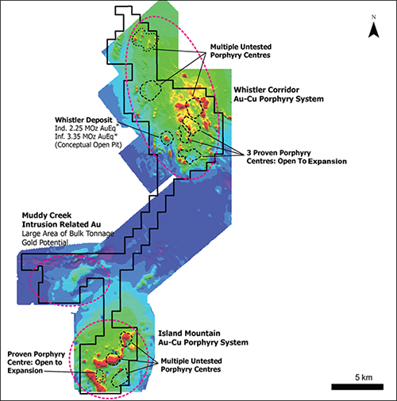

Highlights:
- Brazil Resources has entered into a definitive agreement with Kiska Metals to acquire a 100% interest in the Whistler gold-copper project in south-central Alaska;
- Consideration payable under the transaction consists of 3.5 million shares of Brazil Resources or approximately $1,610,000 based on the closing price of Brazil Resources on July 20, 2015;
- The 170 sq km Whistler gold-copper project hosts several gold-copper porphyry deposits including the Whistler deposit, for which Kiska has completed a NI 43-101 resource estimate, reporting an indicated resource of 2.25 million gold-equivalent ounces and an inferred resource of 3.35 million gold-equivalent ounces (as detailed in Table 1 below) and which Brazil Resources is treating as a historic estimate and plans to complete an updated NI 43-101 Technical Report by a qualified person after closing of the acquisition (see below);
- Approximately 70,000 metres of drilling have been completed on the Project with 19,870 m (48 holes) completed at the Whistler deposit;
- The district-scale project hosts several styles of mineralization including gold-copper porphyry, precious and base metal-rich epithermal and intrusion-related gold mineralization; and
- At a low acquisition cost of 4.5% dilution, the Whistler Project with its large historic resource, strong exploration potential, and relatively low holding cost represents a significant milestone in our strategy to increase shareholder value through targeted acquisitions.
FOR IMMEDIATE RELEASE
Vancouver, British Columbia – July 21, 2015 – Brazil Resources Inc. (the "Company" or "Brazil Resources") (TSX-V: BRI; OTCQX: BRIZF) is pleased to announce that the Company has entered into an agreement (the "Agreement") to acquire (the "Transaction") 100% of the Whistler gold-copper project ("Whistler Project" or "Project") and certain related assets in south-central Alaska from Kiska Metals Corporation ("Kiska"). Total consideration under the Transaction will consist of 3.5 million shares of Brazil Resources. The Project includes 304 Alaska State Mineral Claims, a 50-person all season exploration camp, airstrip and assorted equipment.
Garnet Dawson, CEO, stated: "We are pleased to have reached an agreement to acquire this emerging gold-copper district in a stable mining jurisdiction with several porphyry deposits and prospects identified in the area to date. The Company is dedicated first and foremost to our high-potential gold development projects in Brazil. However, with the Whistler Project, at a cost of just 4.5% dilution, we have an agreement to acquire another project with a historic multi-million ounce resource, large expansion potential, relatively low holding cost and the support of Kiska’s superior technical team, which is also in joint ventures with First Quantum Minerals Ltd. and Teck Resources Ltd. This acquisition is a superb addition to our existing project base and represents another milestone in our strategy to build shareholder value through targeted accretive transactions. "
The Agreement
Pursuant to the Agreement, a wholly-owned subsidiary of Brazil Resources will acquire a 100% interest in the Whistler Project and certain related assets, including an exploration camp, airstrip and certain equipment from a subsidiary of Kiska for consideration consisting of an aggregate of 3.5 million BRI Shares or approximately $1,610,000 based on the closing price of the BRI Shares on July 20, 2015, which BRI
Shares will be subject to escrow and released as follows:
- 875,000 BRI Shares 5 months following the closing date of the Transaction;
- 875,000 BRI Shares 10 months following the closing date of the Transaction;
- 875,000 BRI Shares 15 months following the closing date of the Transaction; and
- 875,000 BRI Shares 20 months following the closing date of the Transaction.
In connection with closing of the Transaction, the Company has also agreed to enter into a management services agreement with Kiska, pursuant to which Kiska will provide certain ongoing support and maintenance services in respect of the Whistler Project for a fee of $10,000 per month for 15 months following closing of the Transaction. The Agreement is subject to customary closing conditions, including approval of the BRI Share issuance by the TSX Venture Exchange (the "TSX-V").
The Whistler Project is subject to a 2.75% Net Smelter Returns ("NSR") royalty over the entire property and a 2.0% Net Profit Interest royalty on certain claims overlying the Whistler deposit. The NSR royalty is subject to a buy down provision providing for the reduction of the NSR royalty to 2.0% upon payment of US$5 million on or before the due date of the first royalty payment.
Whistler Project
The Whistler Project is located approximately 150 km northwest of Anchorage, Alaska and is comprised of 304 Alaska state mining claims (170 sq km) in the Yentna Mining District. Exploration programs can be carried out from a 50-person all season camp that is located 2.7 km east of the Whistler deposit. The camp includes a gravel airstrip, 38 kW diesel generator, water well, septic system and fuel storage facility. The Whistler deposit and adjacent prospects in the Whistler Orbit are connected to the camp and runway by a 6 km access road.
The Project comprises a gold-copper district in an underexplored area of south-central Alaska. It is underlain by a volcano-sedimentary sequence (Jura-Cretaceous Kahiltna Assemblage) that has been intruded by the Late Cretaceous Whistler Intrusive Suite with associated gold-copper porphyry and epithermal mineralization, and the Late Cretaceous to Paleocene Composite Intrusive Suite with associated intrusion-related gold mineralization. The Whistler Project hosts the:
- Whistler gold-copper porphyry deposit with a historic National Instrument 43-101 ("NI 43-101") resource estimate;
- Whistler Orbit gold-copper porphyry prospects;
- Island Mountain gold-copper porphyry deposit;
- Muddy Creek intrusion-related gold target; and
- Several gold-copper targets outlined by soil geochemistry, geophysics, and mapping (Fig. 1).
Figure 1: Whistler Project showing location of Whistler deposit, Whistler Orbit prospects, Island Mountain deposit, and Muddy Creek gold targets (color image is airborne magnetic map: warm colors = magnetic high and cool colors = magnetic low).

*Historic resource estimate (Table 1), which is not being treated as a current resource estimate by the Company as a qualified person has not done sufficient work on behalf of Brazil Resources to classify the historical estimate as a current resource (see below).
Whistler Deposit
The Whistler gold-copper porphyry deposit was the subject of a NI 43-101 compliant resource estimate published by Kiska in 2011 (Table 1), which is being treated as a historic estimate by the Company. The conceptual pit delineated resource is based on 48 drill holes (19,870 m) and is reported within a conceptual pit shell with 45 degree pit slope angles resulting in a strip ratio of 1.3:1 (waste to ore) at a 0.3 g/t cut-off; the deposit comes to surface and features a higher grade core.
Table 1: Whistler deposit historical NI 43-101 pit constrained resource estimate published by Kiska in 2011.
| |
Tonnes & Grade |
Contained Metal |
Resource
Category |
Tonnes
(Mt) |
Au
(g/t) |
Ag
(g/t) |
Cu
(%) |
Au Eq.1
(g/t) |
Au
(Moz) |
Ag
(Moz) |
Cu
(Mlb) |
Au Eq.1
(Moz) |
| Indicated |
79.2 |
0.51 |
1.97 |
0.17 |
0.88 |
1.28 |
5.03 |
302 |
2.25 |
| Inferred |
145.8 |
0.40 |
1.75 |
0.15 |
0.73 |
1.85 |
8.21 |
467 |
3.35 |
1Gold equivalent grade calculation for the Whistler Project resource was based on 75% recovery for gold and silver, 85% recovery for copper, US$990/oz gold, US$15.40/oz silver and US$2.91/lb copper.
The resource estimate is historical in nature and will not be treated as a current resource estimate by Brazil Resources as a qualified person has not done sufficient work on behalf of Brazil Resources to classify the historical estimate as a current mineral resource. While the historical resource estimate should not be relied upon, the Company believes the historical estimate provides an indication of the potential of the property and is relevant to any future exploration. The historical resource estimate for the Whistler Project is based on a technical report completed for Kiska by R.J. Morris, M.Sc., P.Geo. titled "Resource Estimate for the Whistler Gold Copper Deposit and Results of Property Wide Exploration" with an effective date of March 17, 2011. No new drilling or sampling have been completed on the Whistler deposit since the above resource estimate was completed, however, following closing of the acquisition of the Project, an independent qualified person on behalf of Brazil Resources will be required to, among other things, examine the cut-off grade with reference to today's metal prices, verify historic sampling and results and re-issue the estimate in a NI 43-101 Technical Report before Brazil Resources can treat the estimate as current.
Whistler Orbit
The Whistler Orbit is a large area (approx. 25 sq km) of extensive phyllic (quartz-sericite-pyrite) alteration that is peripheral to mineralized porphyry systems that include the Raintree (West, North and South) and Rainmakers prospects. It is located east of the outcropping Whistler deposit in a low lying area that is mostly covered by glacial till (5 to 15 m). The potential to expand the resources at the Raintree and Rainmaker prospects and identify new mineralized porphyry systems with additional drilling is considered good by Company geologists. Historical diamond drilling (157 holes in 33,532 m) has intersected gold-copper mineralization over substantial widths at these prospects.
Island Mountain Deposit
The Island Mountain gold-copper porphyry system hosts multiple porphyry centers including the Breccia, Cirque, Howell and Super Conductor zones that occur within an area of 9 sq km. Historical diamond drilling (40 holes in 15,572 m) has tested several of these porphyry centers with the majority (34 holes) of this drilling completed on the Breccia zone where these holes intersected gold-copper mineralization over substantial widths. The Island Mountain area is located 23 km south of the Whistler deposit.
Muddy Creek
Muddy Creek intrusion-related gold mineralization occurs in narrow sheeted quartz-sulphide veins that are hosted within intrusive phases of the Estelle Composite Intrusive Suite. Reconnaissance rock-soil geochemistry and geophysics has outlined multiple anomalies (Discovery Creek, Phoenix Creek, Arseno Knob and Bonanza zone) over an area of 5.5 sq km. Historic diamond drilling (3 holes in 955 m) was successful in intersecting gold mineralization at Arseno Knob. The Muddy Creek area is located 18 km southwest of the Whistler deposit.
Paulo Pereira, Brazil Resources' President has reviewed and approved the technical information contained in this news release. Mr. Pereira holds a Bachelors degree in Geology from Universidade do Amazonas in Brazil, is a Qualified Person as defined in NI 43-101 and is a member of the Association of Professional Geoscientists of Ontario.
About Brazil Resources Inc.
Brazil Resources Inc. is a public mineral exploration company with a focus on the acquisition and development of projects in emerging producing gold districts in Brazil, Paraguay and other regions of the Americas. Brazil Resources is advancing its Cachoeira and São Jorge Gold Projects located in the State of Pará, northeastern Brazil and its Rea Uranium Project in the western Athabasca Basin in northeast Alberta, Canada.
For additional information, please contact:
Brazil Resources Inc.
Amir Adnani, Chairman
Garnet Dawson, CEO
Telephone: (855) 630-1001
Forward Looking Statements
This document contains certain forward-looking statements that reflect the current views and/or expectations of Brazil Resources with respect to its business and future events, including the Company's expectations respecting the Whistler Project, the closing of the Transaction and any future exploration programs. Forward-looking statements are based on the then-current expectations, beliefs, assumptions, estimates and forecasts about the business and the markets in which Brazil Resources operates, including that the Company and Kiska will satisfy or waive all conditions required to close the Agreement, including receipt of all required regulatory approvals, including of the TSX-V, the Company will finalize an exploration program, budgets and other matters, that such exploration program will be carried out as planned and that the Company will confirm historical exploration results and complete an updated technical report with a current resource estimate for the Whistler Project. Investors are cautioned that all forward-looking statements involve risks and uncertainties, including: the inherent risks involved in the exploration and development of mineral properties, the uncertainties involved in interpreting drill results and other exploration data, the potential for delays in exploration or development activities, the geology, grade and continuity of mineral deposits, the possibility that future exploration, development or mining results will not be consistent with the Company's expectations, accidents, equipment breakdowns, title and permitting matters, labour disputes or other unanticipated difficulties with or interruptions in operations, fluctuating metal prices, unanticipated costs and expenses, uncertainties relating to the availability and costs of financing needed in the future, including to fund any exploration programs on the Whistler Project, any inability of the Company to finalize an exploration program, budget or other matters, that the Company or Kiska may not receive all required approvals or satisfy all conditions to close the Transaction and that the Company may not be able to confirm historical exploration results or complete an updated technical report with a current resource estimate for the Whistler Project. These risks, as well as others, including those set forth in Brazil Resources' filings with Canadian securities regulators, could cause actual results and events to vary significantly. Accordingly, readers should not place undue reliance on forward-looking statements and information. There can be no assurance that forward-looking information, or the material factors or assumptions used to develop such forward looking information, will prove to be accurate. Brazil Resources does not undertake any obligations to release publicly any revisions for updating any voluntary forward-looking statements, except as required by applicable securities law.
Neither the TSX Venture Exchange nor its Regulation Services Provider (as that term is defined in the policies of the TSX Venture Exchange) accepts responsibility for the adequacy or accuracy of this news release.